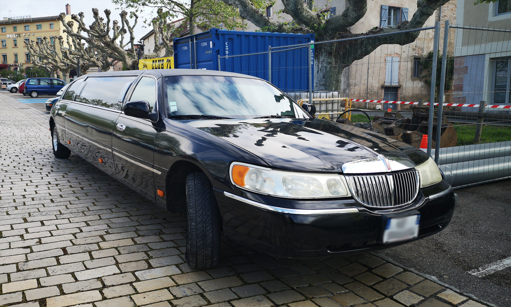

Taxi to Millenium Park
V.
We vote 2-1 to Taxi to Millenium Park. I warn Bernard and Speedy that it's a perilous trip filled with difficulties--pan-handlers, security guards, heat-stroke, and other humans, and that we best pack provisions for the long trip. Bernard carries a water bowl in his mouth, and Speedy, who would rather just hang out inside, walks back upstairs to nap in our captors' bedroom. We hear her bell on her collar bounce each time she walks up a stair. "You know, we have to find a way to get rid of these obnoxious bells, right?" I tell Bernard. "Any humans or predators will hear us miles away. We could try a disguisee. There are only three things that I can imaginee that rings a bell each time they walk: cowboy, elf or Santa Clause."
"It's summer," Bernard adds.
"Then that rules out any Christmas costumes," I say. "We'd need something inconspicious. What we need to get are two costumes. One large costume that we can slip over ourselves, and a smaller costume that we can wear below the large costume. We'll ditch the large costume in case we get unwarranted attention. The humans keep their costumes in the basement, if I recall right."
"Should we ask Speedy what she wants for lunch?" Bernard asks.
"Nah," I reply. "Her loss if she doesn't join. We'll need to also give the driver specific directions when they pick us up."
"Can we do that?" Bernard says. "They don't talk animal."
"Text. We'll use Rahul's cell and write a note in the taxi app service. Order a taxi to take us there, and another to pick us up within two hours--by Lakeshore Drive."
"Rahul will know if his phone goes missing."
"That's easy. We just use a placeholder that weighs and feels the same as a phone. He'll never know until it's too late."
"Like a milkbone?" Bernard asks.
"Sure," I reply. "I'd suggest a calculator. We'll have one chance when he takes you for a walk right before he goes on his bike ride. We should do cops and robbers again."
"Can I be the robber this time?"
"No, you're too friendly, and you're a dog."
VI.

"Lincoln Town Car Streach limo" by Guillaume Vachey is licensed under CC0 1.0.
I see a limo pull up to the house. One tall man, dressed in black business suit and sunglasses, gets out of the limo. He walks up to the door and rings the bell. We motion him inside, and he opens the door. I see a surprised expression on his face, and he whispers into his sleeve. "Jesus, Barry, you're never going to believe this. There's a weirdo dressed up as a T-Rex, just as the note said on the app." He pauses. "Yes, the note also said no questions asked, but are you sure we shouldn't call this one in? How do we know that he didn't rob the place? ...Wait, what? Sorry, you're right, I shouldn't assume the person is a male just because they're dressed up in a T-Rex costume. Yes, weirdo isn't politically correct jargon, either, I apologize. Yes, yes, the note said no questions asked along with a downpayment for two hundred. What was that again? Yes, he--they are standing in front of me. I'll let them know they should meet you in the backseat."
He motions to us and tells us to follow him to the limo. He opens the backseat, and we sit inside. It appears much more spacious on than inside than one would expect looking out. A long and curved row of leather seats wrap around the interior. Sky lights flicker from below the interior limo roof and form shapes of constellations. Water bottles and Chinese take-out continaers spread on top of the elegant minibar, and flatscreens hang on each end and feature a looping clip of a yule log fireplace crackling with fire. A tall, slender man sits comfortably on one seat, wearing a business suit and a flag lapel pin. He has dark brown eyes, wing-shiped ears, and short salt and pepper hair. He gestures us forward and offers his hand, which I try to shake.
"Pleasure to meet you, Rahul," he says. He pauses, noticing that my grip with this tiny T-Rex hand is like shaking a fish, and he lets go. "Quite a strong grip you got there, friend. I'm President Bar--well, let's just say my wife wants me to be on the low for now. Just call me Barry!"
I wiggle the costume, making the T-Rex head shake with a nod.
"Do you mind not not standing on my eye?" Bernard growls to me.
"Keep it down, Bernard. By the way, I get that you were in character, but you didn't have to chase me around the living room for that many laps."
"Whatever. What do you see?"
"We're in the limo."
"You bought first class, didn't you? I told you to go coach or regular, not the top one percent rate!"
"I have paws , not fingers," I hiss back. "We're--well, Rahul is--now eligible for a discount now. Also, stop panting. You'll use up all the oxygen in this T-Rex costume."
"I can hear your stomach growling there, Sport." Barry says. "Would you like some Chinese food, bottled water, or some fine liqueur ?"
I shake the T-Rex head sideways. The limo moves.
"You're probably wondering how you ended up with me as your taxi."
I shake the T-Rex head, then change it up to nod a yes.
"Times are tough for me, Rahul. I made some bad investments, and my booksales haven't been doing too well. Nowadays these millenials prefer to stream everything than read a good old-fashioned book or listen to it on audio. Mi--well, let's not say her name outloud. She's a little iritated at me. She has heightened hearing and will show up anytime that I mention her name. Plus, she's always pitching this idea that I have to catch-up with the times, you know, start my own bi-weekly podcast. Discuss something topical with our mutual celebrity friends who could appear as guests. We could talk sports, cars, music, or BBQ. My good friend, Bill, loves that vegan BBQ! Anyway, I have to supplement my income along with these speaking tours. It costs a lot to run a foundation, don't you know?"
T-Rex nod.
"Again, thanks for ordering the exlcusive presidential package! What better treat than to go through Lakeshore Drive and sight see Central Loop and Millenium Park while taking a taxi with me, your good pal, Barry from the block?"
He laughs to himself, taking a drink from a bottle of honey ale. He continues talking to us--or rather, to himself--for another half an hour. Bernard and I begin to fidget in boredom, and we discuss our options.